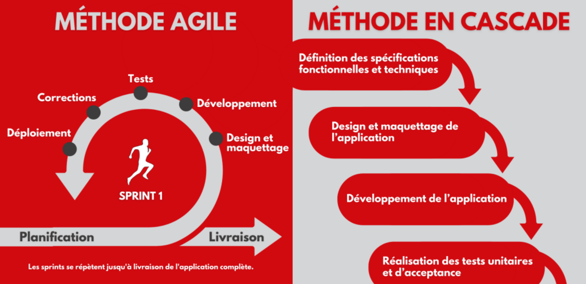

Présentation du Blog : Une Vision d'Ensemble du Projet
Introduction
Bienvenue sur notre blog dédié à la gestion de projet de notre site web. Ici, nous vous proposons une vision globale de notre projet, en mettant en lumière les aspects de la chefferie de projet, la coordination et la gestion des différentes étapes du développement. Ce blog est conçu pour vous offrir une compréhension approfondie de notre démarche, nos méthodes et nos objectifs.
La Vision d'Ensemble
En tant que chef de projet, mon rôle est de coordonner les efforts de l'équipe, de veiller au respect des délais et de s'assurer que chaque étape du projet se déroule sans encombre. Mon blog se concentre sur les aspects suivants :
- Planification et gestion de projet.
- Communication et collaboration avec les membres de l'équipe.
- Suivi des objectifs et des délais.
- Résolution des problèmes et prise de décisions stratégiques.
En partageant ces éléments, je vise à offrir une vision claire et structurée de notre progression, des défis rencontrés et des solutions mises en place pour garantir la réussite du projet.
Les Contributions Techniques de l'Équipe
Mon blog n'est qu'une partie de l'ensemble du projet. Pour une perspective plus technique, je vous invite à explorer les blogs de mes collègues, Marine JACOLOT et Nathan BONNELL, qui apportent chacun une expertise spécifique dans leur domaine respectif :
- Blog de Marine JACOLOT : Marine JACOLOT est responsable des maquettes, du design et du développement front-end. Son blog couvre les aspects créatifs et visuels du projet, y compris la conception des interfaces utilisateur, l'expérience utilisateur (UX) et l'implémentation des maquettes en code fonctionnel.
- Blog de Nathan BONNELL : Nathan BONNELL se concentre sur le back-end du site, gérant les serveurs, les bases de données et les fonctionnalités côté serveur. Son blog offre des insights sur la gestion des données, l'architecture serveur et l'intégration des différents services backend pour assurer la robustesse et l'efficacité du site.
Ces blogs techniques sont essentiels pour comprendre les détails et les solutions spécifiques mises en œuvre pour créer un site web complet et fonctionnel.
Conclusion
Ce blog vous offre une vue d'ensemble de notre projet de site web, tandis que les blogs de Marine JACOLOT et Nathan BONNELL fournissent des informations techniques détaillées sur leurs contributions respectives. En explorant ces ressources, vous obtiendrez une compréhension complète de notre projet, de la gestion globale à l'implémentation technique. Nous vous invitons à suivre nos aventures et à découvrir comment nous collaborons pour créer un site web performant et innovant.